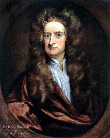

Исаак Ньютон

Англичанин, которого многие считают вообще величайшим ученым всех времен и народов. Родился в семье мелкопоместных дворян в окрестностях г. Вулсторпа (графство Линкольншир, Англия). Отца в живых не застал (тот умер за три месяца до рождения сына). Вступив в повторный брак, мать оставила двухлетнего Исаака на попечение его бабушки. Своеобразное эксцентричное поведение уже взрослого ученого многие исследователи его биографии как раз и приписывают тому факту, что до девятилетнего возраста, когда последовала смерть его отчима, мальчик был полностью лишен родительской заботы.
Какое-то время юный Исаак изучал премудрости сельского хозяйства в ремесленном училище. Как это часто случается с великими впоследствии людьми, о его чудачествах в ту раннюю пору его жизни до сих пор ходит масса легенд. Так, в частности, рассказывают, будто однажды его отправили на выпас сторожить скот, который благополучно разбрелся в неизвестном направлении, пока мальчик сидел под деревом и увлеченно читал заинтересовавшую его книгу. Так это или не так, но тягу подростка к знаниям вскоре приметили — и отправили обратно в гимназию г. Грантем, по окончании которой юноша успешно поступил в Тринити-колледж Кембриджского университета.